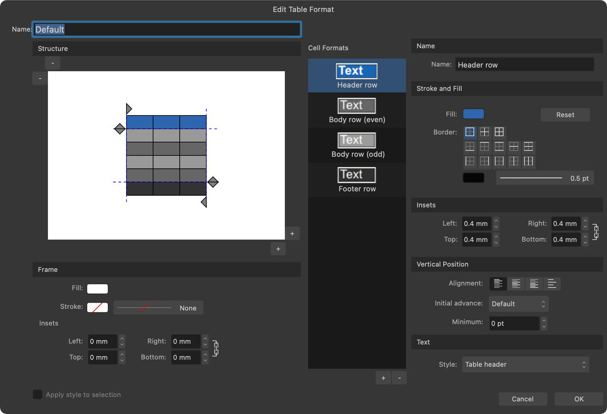

Using the Table Formats panel, you can create and store custom table formats for use throughout your document.
A table format works as a template, storing the underlying structure and formatting of a table but not its content. It can be applied to additional tables, ensuring design consistency.
Customizing table formats allows you to:
Select table cell styles such as rows (odd/even), header rows, and rules for table modification.
Add or remove styles to make the format more basic or more advanced.
Set each style's cell properties such as fill, transparency, border, margins, and fonts.
Independently format odd and even rows for alternating styles between rows.
Automatically update the formatting of multiple tables.
If you're looking for design freedom, you can create your own table formats from scratch.
Managing and applying table formats
The Table Formats panel is used to create table formats, from scratch or based on a table that has been directly formatted on the page.
You can import table formats from another Affinity document, and save the current document's table formats as the default for reuse across multiple new documents.
To access the Table Formats panel:
On the Window menu, select Table>Table Formats.
To create a new table format from scratch:
On the Table Formats panel, click the Panel Preferences menu and select Create New Format.
To create a new table format from a table:
Select the table.
On the Table Formats panel, click the Panel Preferences menu and select Add Format from Selection.
To apply a table format:
With a table selected on the page, do one of the following on the Table Formats panel:
To combine with existing table formatting: click a table format.
To replace existing table formatting: click a table format's options menu and select Apply "[Table format name]" (Override Local).
To save a set of table formats as the default for new documents:
On the Table Formats panel, click the Panel Preferences menu and select Save Formats as Default.
To update a table format with settings from a table:
Select the table.
On the Table Formats panel, select Update From Selection on the table format's options menu.
To import table formats:
On the Table Formats panel, click the Panel Preferences menu and select Import Formats.
Navigate to and select the Affinity file from which to import table formats, then select Open.
A list of formats will appear, giving you the ability to select those you wish to import, rename incoming formats, or resolve any import conflicts.
When you are ready to import the selected format(s), select OK.
Editing table and cell formats
Table formats can be edited at any time. After editing a table format, the appearance of each table to which it is applied is automatically updated.
Each table format contains at least one cell format. You can create and apply additional cell formats, e.g. to color a table's header row differently than its body rows, or to alternate the background color of odd and even body rows.
To edit a table format:
On the Table Formats panel, click on a table format's options menu and do one of the following:
To edit the custom table format directly, select Edit "[Table format name]".
To create and edit a copy of the custom table format, select Edit copy of "[Table format name]".
The Edit Table Format dialog displays the header and row cells (the Structure) that make up the table format on the left, a list of available formats which can be applied to the table in the center, and formatting properties on the right.

Selecting table cells on the Structure will highlight the style being edited in the Cell Formats list.
To resize the table structure:
On the Structure, click the small - and + buttons located at the top-left and bottom-right corners respectively to adjust the number of columns and rows.
To create a new cell format:
From the Cell Formats pane, click the + button.
To delete an existing cell format:
From the Cell Formats pane:
Select the unwanted cell format.
Click the - button.
Common table formatting
On the Edit Table Format dialog, the Structure contains row and column handles. These handles can be moved around to create header and footer areas, which determine the portions of the table considered to be non-repeating.
The cells outside of the header and footer areas will have their cell formatting repeated as the table grows.
To add a table footer:
On the Structure, click the footer row handle to move it up one row.
Create a new cell format from the Cell Formats pane. This style is to be created specifically for your footer cells.
Fill in the properties for the cell format using the options on the dialog.
Select the cell in the footer area.
Select the new cell format from the Cell Formats list. The cell properties of the footer can be edited to display a contrasting footer style.
To add a row header:
On the Structure, click the header row handle to move it down one row. This creates a header area.
Create a new cell format from the Cell Formats pane. This style is to be created specifically for your header cells.
Fill in the properties for the cell format using the options on the dialog.
Select the cell in the header area.
Select the new cell format from the Cell Formats list. The cell properties of the header can be edited to display a different header style.
To add a repeating pattern:
On the Structure, select individual cells within the body area of the table, then apply different cell formats to alternating cells.